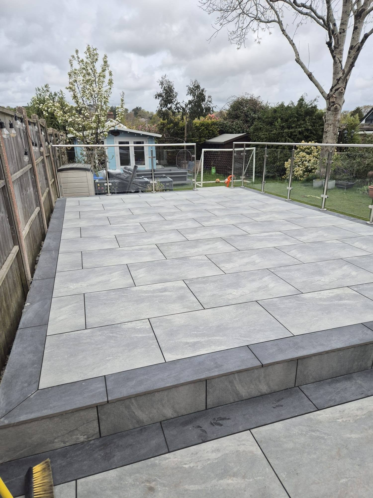
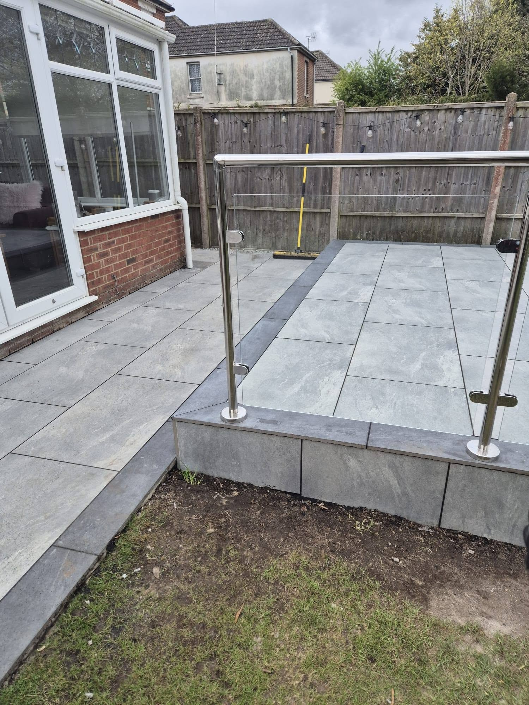
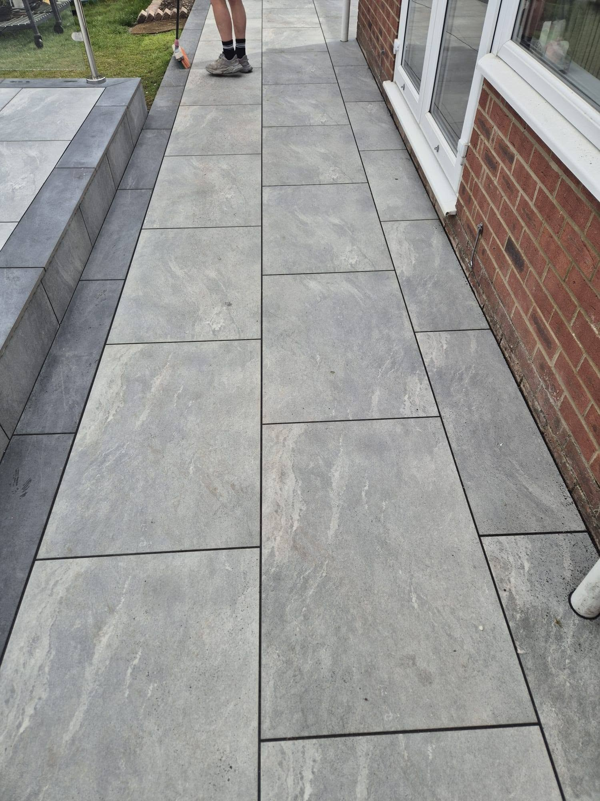
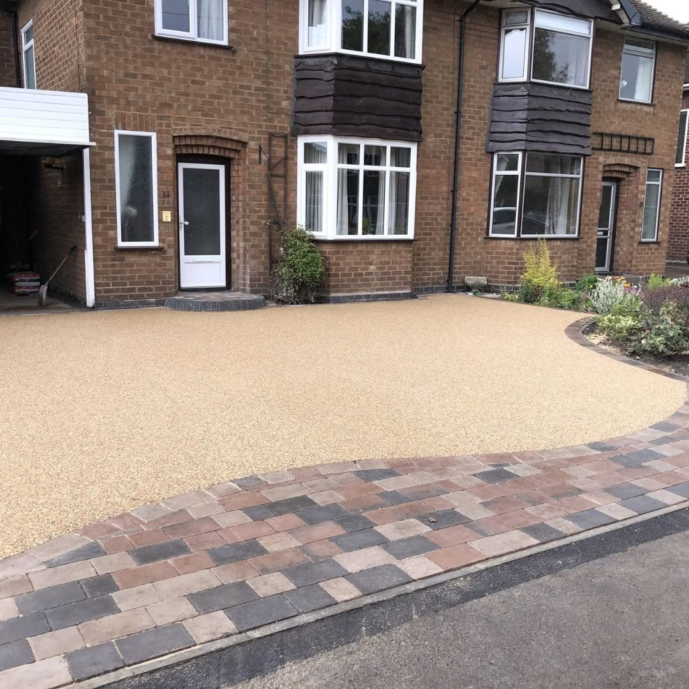
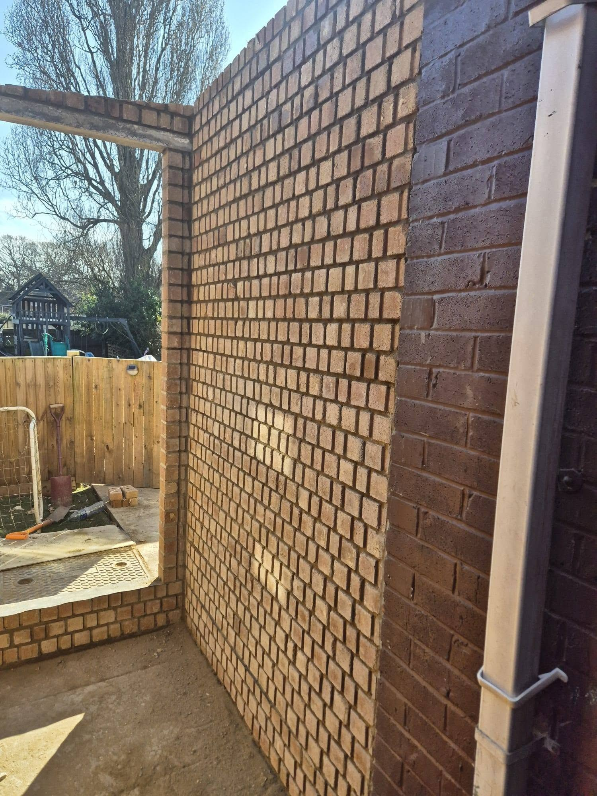
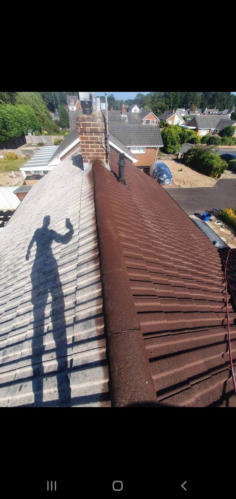
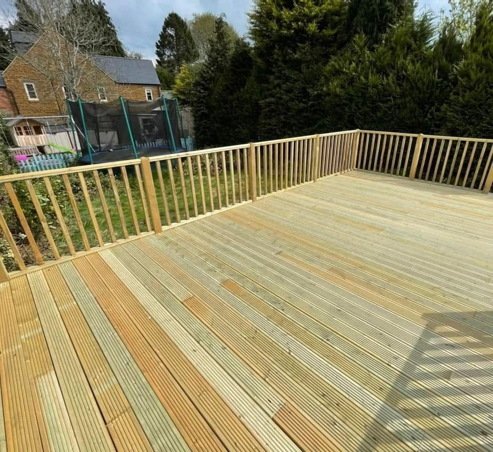

Driveways & SurfacingBlock paving, resin and driveway repairs

POOLE · BOURNEMOUTH · SURROUNDING DORSET
Transform. Protect. Improve.
Patios, driveways, landscaping and exterior property care from one local team. Bring us the job outside your home.
Patios & DrivewaysLandscapingRoofing & DrainageProperty Care
Patios & Outdoor LivingPorcelain, natural stone and garden paving
Landscaping & FencingGardens, lawns, decking and boundaries
Roofing & Property CareRepairs, gutters, drainage and maintenance
PATIOS & OUTDOOR LIVING
Make room for life outside.
The supplied Jurassic Coast project photos show a raised porcelain patio with contrasting borders and a glass balustrade. The levels, path and clean paving finish make the space practical as well as inviting.
Discuss your patio →

DRIVEWAYS & SURFACING
A better first impression starts outside.
Jurassic Coast Exteriors lists block paving, resin driveways, entrances, paths and driveway repairs. Ask about the surface, access and finish that suits your property.
Ask about driveways →Illustrative service photographs from earlier paving work.


PROJECT PHOTOGRAPHS
See the finish for yourself.
These five photographs were supplied for Jurassic Coast Exteriors. Additional illustrative service images are labelled below.



DETAILS THAT MATTER
Good groundwork. A neat finish.
A patio depends on sound levels, edges and practical access. These two supplied views show the raised paved area and the path around it.
Plan your project →MORE WAYS WE CAN HELP
Exterior work, all in one place.
DORSET EXTERIOR PROPERTY SPECIALISTS
One team for the work outside.
Jurassic Coast Exteriors advertises exterior property improvements and maintenance in Poole, Bournemouth and surrounding Dorset areas, from hard landscaping and garden work to roofing and repairs.
01
Local team
Serving Poole, Bournemouth and nearby Dorset locations.
02
Wide service range
Ask about an individual repair or a larger exterior project.
03
Free quotation
Share your plans and request a no-obligation quote.
REQUEST A QUOTE
Tell us what needs doing.
Complete the form and WhatsApp opens with your details ready to send. This is a quote request, not a confirmed booking.
JURASSIC COAST EXTERIORS
Ready to get started?
Poole · Bournemouth · Dorset · JurassicCoastExteriors@gmail.com